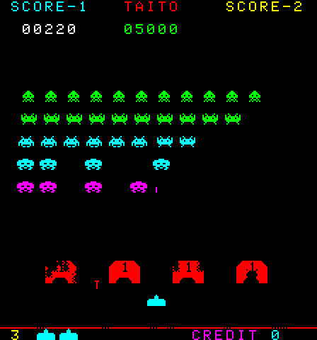
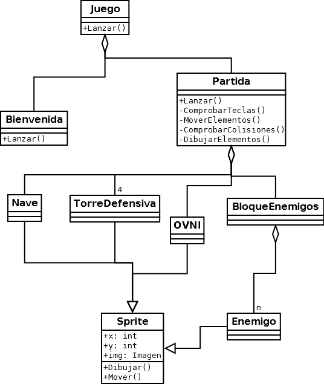

Cuando tenemos que realizar un proyecto grande, será necesario descomponerlo en varios subprogramas, de forma que podamos repartir el trabajo entre varias personas.
Esta descomposición no debe ser arbitaria. Por ejemplo, será deseable que cada bloque tenga unas responsabilidades claras, y que cada bloque no dependa de los detalles internos de otros bloques.
Existen varias formas de descomponer un proyecto, pero posiblemente la más recomendable consiste en tratar de verlo como una serie de "objetos" que colaboran entre sí, cada uno de los cuales tiene unas ciertas responsabilidades.
Una forma de "descubrir" los objetos que forman parte de un programa es partir de la descripción del problema, y subrayar los nombres con un color y los verbos con otro color.
Vamos a ver dos ejemplos: un primer ejemplo más completo, en el que habrá bastantes objetos y que no llegaremos a implementar en Pascal, y un segundo ejemplo más sencillo, que sí crearemos y posteriormente ampliaremos.
Como primer acercamiento, vamos a dedicar un momento a pensar qué elementos ("objetos") hay en un juego como el clásico Space Invaders:
Observando la pantalla anterior, o (preferiblemente) tras jugar algunas partidas, podríamos hacer una descripción del juego en lenguaje natural:
Nosotros manejamos una "nave", que movemos a izquierda y derecha y que puede disparar. Nuestra nave se puede esconder detrás de "torres defensivas". Nos atacan (nos disparan) "enemigos". Además, estos enemigos se mueven de lado a lado, pero no de forma independiente, sino como un "bloque". En concreto, hay cuatro "tipos" de enemigos, que no se diferencian en su comportamiento, pero sí en su imagen. Además, en ocasiones aparece un "OVNI" en la parte superior de la pantalla, que se mueve del lado izquierdo al lado derecho y nos permite obtener puntuación extra si le impactamos con un disparo. Igualmente, hay un "marcador", que muestra la puntuación actual y el récord (mejor puntuación hasta el momento). Antes de cada "partida", pasamos por una pantalla de "bienvenida", que muestra una animación que nos informa de cuántos puntos obtenemos al destruir cada tipo de enemigo.
A partir de esa descripción, podemos buscar los nombres (puede ayudar si los subrayamos con un rotulador de marcar), que indicarán los objetos en los que podemos descomponer el problema, y los verbos (con otro rotulador de marcar, en otro color), que indicarán las acciones que puede realizar cada uno de esos objetos.
Por ejemplo, el párrafo anterior se podría reescribir así : ##### De dónde podemos extraer los siguientes objetos y las siguientes acciones: Nave : mover izquierda, mover derecha, disparar Enemigos : mover, disparar Ovni : mover Bloque (formado por enemigos) : mover Marcador : mostrar, reiniciar, incrementar puntos Partida (contiene nave, enemigos, torres, ovni) Juego (formado por bienvenida y partida) #### (En general, esta descomposición no tiene por qué ser única, distintos programadores o analistas pueden llegar a soluciones parcialmente distintas). Esa serie de objetos, con sus relaciones y sus acciones, se puede expresar mediante un "diagramas de clases", que en nuestro caso podría ser así (simplificado): ############# Algunos de los detalles que se pueden leer de ese diagrama son:
En este punto, podríamos empezar a repartir trabajo: una persona se podría encargar de crear la pantalla de bienvenida, otra de la lógica del juego, otra del movimiento de los enemigos, otra de las peculiaridades de cada tipo de enemigo, otra del OVNI...
Nosotros no vamos a hacer proyectos tan grandes (al menos, no todavía), pero sí empezaremos a crear proyectos sencillos en los que colaboren varias clases, que permitan sentar las bases para proyectos más complejos, y también entender algunas peculiaridades de los temas que veremos a continuación, como el manejo de ficheros en Java.
Vamos a ver qué es eso de los "objetos"...
#########Hasta ahora estamos estado "cuadriculando" todo para obtener "algoritmos": tratábamos de convertir cualquier cosa en un procedimiento o una función que pudiéramos emplear en nuestros programas.
Pero no todo lo que nos rodea es tan fácil de cuadricular. Supongamos por ejemplo que tenemos que introducir datos sobre una puerta en nuestro programa. ¿Nos limitamos a programar los procedimientos AbrirPuerta y CerrarPuerta? Al menos, deberíamos ir a la zona de declaración de variables, y allí guardaríamos otras datos como su tamaño, color, etc.
No está mal, pero es antinatural. ¿A qué me refiero? Pues a que una puerta es un conjunto: no podemos separar su color de su tamaño, o de la forma en que debemos abrirla o cerrarla. Sus características son tanto las físicas (lo que hasta ahora llamábamos variables) como sus comportamientos en distintas circunstancias (lo que para nosotros eran los procedimientos). Todo ello va unido, formando un OBJETO.
Por otra parte, si tenemos que explicar a alguien lo que es el portón de un garaje, y ese alguien no lo ha visto nunca, pero conoce cómo es la puerta de su casa, le podemos decir "se parece a una puerta de una casa, pero es más grande para que quepan los coches, está hecha de metal en vez de madera..."
Finalmente, conviene recordar que "abrir" no se refiere sólo a una puerta. También podemos hablar de abrir una ventana o un libro, por ejemplo.
Pues con esta discusión filosófica ;-) hemos comentado casi sin saberlo las tres características más importantes de la Programación Orientada a Objetos (OOP):
Comentado esto, vamos a empezar a ver ejemplos en Pascal para tratar de fijar conceptos. Para todo lo que viene a continuación, ser á necesario emplear la versión 5.5 o superior de Turbo Pascal, o bien Free Pascal.
Los objetos en Pascal se definen de forma parecida a los registros (record), sólo que ahora también incluirán procedimientos y funciones. Vamos a escribir un mensaje en una cierta posición de la pantalla. Este será nuestro objeto "tí tulo".
type
{ Def. tipo }
titulo = object
texto: string;
{ Variables }
x,y : byte;
procedure FijaCoords(nuevoX, nuevoY: byte);
{ Métodos }
procedure FijaTexto(mensaje: string);
procedure Escribe;
end;
var
miTitulo: titulo;
{ Variable de tipo objeto }
Accederemos a los métodos y a los datos precediendo el nombre de cada uno por el nombre de la variable y por un punto, como hacíamos con los registros (record):
miTitulo.x := 23;
miTitulo.y := 12;
miTitulo.FijaTexto('Hola');
miTitulo.Escribe;
Lo anterior se entiende, ¿verdad? Sin embargo, hay algo que se puede pero no se debe hacer: NO SE DEBE ACCEDER DIRECTAMENTE A LOS DATOS. Esto es otra de las máximas de la OOP (la ocultación de datos). Para modificarlos, lo haremos siempre a través de algún procedimiento (método) del objeto.
Por eso es por lo que hemos definido los procedimientos FijaCoords y FijaTexto... ¿¡definido!? ¡Pero si sólo está la primera línea!... }:-)
Don't panic! Esto no es nuevo para nosotros: cuando creábamos una unidad (unit), teníamos un encabezamiento (interface) en el que sólo poníamos las cabeceras de las funciones y procedimientos, y luego un desarrollo (implementation), donde realmente iba todo el código. ¿Verdad? Pues aquí ocurrirá algo parecido.
Vamos a ir completando el programa para que funcione, y así
irá quedando todo más claro:
¿Y todo este rollazo de programa para escribir "Hola"? Nooooo.... Ya iremos viendo las ventajas, pero eso el próximo día, para que no resulte demasiado denso...
En el apartado anterior del tema vimos una introducción a lo que eran los objetos y a cómo podíamos utilizarlos desde Turbo Pascal. Hoy vamos a ver qué es eso de la herencia y el polimorfismo.
Habíamos definido un objeto "título": un cierto texto que se escribía en unas coordenadas de la pantalla que nosotros fijásemos.
type
titulo = object
texto: string;
{ El texto que se escribirá }
x,y : byte;
{ En qué posición }
procedure FijaCoords(nuevoX, nuevoY: byte);
{ Pues eso }
procedure FijaTexto(mensaje: string);
{ Idem }
procedure Escribe;
{ Lo escribe, claro }
end;
Funciona, pero hemos tecleado mucho para hacer muy poco. Si de verdad queremos que se vaya pareciendo a un título, lo menos que deberíamos hacer es poder cambiar el color para que resalte un poco más.
Para conseguirlo, podemos modificar nuestro objeto o crear otro. Supongamos que nos interesa conservar ese tal y como está porque lo hemos usado en muchos programas, etc, etc.
Pues con el Pascal "de toda la vida" la opción que nos queda sería crear otro objeto. Con los editores de texto que tenemos a nuestro alcance, como los que incluye el Entorno de Desarrollo de TP6 y TP7 esto no es mucho problema porque no hay que teclear demasiado: marcamos un bloque, lo copiamos y modificamos lo que nos interese.
Pero vamos teniendo nuevas versiones de nuestros objetos por ahí desperdigadas. Si un día descubrimos una orden más rápida o más adecuada que Write para usarla en el procedimiento "escribe", tendremos que buscar cada versión del objeto en cada programa, modificarla, etc...
La herencia nos evita todo esto. Podemos definir un nuevo objeto partiendo del que ya teníamos. En nuestro caso, conservaremos la base del objeto "Titulo" pero añadiremos el manejo del color y retocaremos "escribe" para que lo contemple.
El nuevo objeto quedaría:
type
TituloColor = object( titulo )
color: byte;
{ El color, claro }
procedure FijaColores(pluma, fondo: byte);
{ Pues eso }
procedure Escribe;
{ Lo escribe de distinta forma }
end;
Aunque no lo parezca a primera vista, nuestro objeto sigue teniendo los métodos "FijaCoords" y "FijaTexto". ¿Donde están? Pues en la primera línea:
object ( titulo )
quiere decir que es un objeto descendiente de "titulo". Tendrá todos sus métodos y variables más los nuevos que nosotros indiquemos (en este caso, "color" y "FijaColores"). Además podemos redefinir el comportamiento de algún método, como hemos hecho con Escribe.
Veamos cómo quedaría nuestro programa ampliado
En el mismo programa, como quien no quiere la cosa ;-) , tenemos un
ejemplo de polimorfismo: no es sólo que las variables "texto",
"x" e "y" esten definidas en los dos objetos de igual forma y tengan valores
diferentes, sino que incluso el método "Escribe" se llama igual
pero no actúa de la misma forma.
Antes de dar este apartado por "sabido" para pasar a ver qué
son los constructores, los destructores, los métodos virtuales,
etc... un par de comentarios:
procedure tituloColor.Escribe;
begin
textAttr := color;
inherited escribe;
end;Es decir: cambiamos el color y luego todo es igual que el Escribe que hemos heredado del objeto padre ("titulo"). En otras versiones anteriores de Turbo Pascal (5.5 y 6) no existe la palabra inherited, y deberíamos haber hecho
procedure tituloColor.Escribe;
begin
textAttr := color;
titulo.escribe;
end;que es equivalente. El inconveniente es que tenemos que recordar el nombre del padre.
Los problemas que puede haber con herencia de este tipo los veremos cuando digamos qué son métodos virtuales...
Me explico: no hemos inicializado las variables, de modo que "x" valdrá lo que hubiera en la posición de memoria que el compilador le ha asignado a esta variable. Si este valor fuera mayor de 80, estaríamos intentando escribir fuera de la pantalla. Igual con "y", y a saber lo que nos aparecería en "texto"...¿Cómo lo solucionamos? Pues por ejemplo creando un procedimiento "inicializar" o similar, que sea lo primero que ejecutemos al usar nuestro objeto. Por ejemplo:
procedure titulo.init;
begin
x := 1;
y := 1;
texto := '';
end;
[...]procedure tituloColor.init;
begin
inherited init;
color := 0;
end;[...]
begin
titulo.Init;
tituloColor.Init;
[...]
end.
Antes de dar por terminada esta lección, un comentario sobre
OOP en general, no centrado en Pascal: puede que alguien oiga por ahí
el término "sobrecarga". Es un tipo de polimorfismo:
sobrecarga es cuando tenemos varios métodos que se llaman igual
pero cuyo cuerpo es distinto, y polimorfismo puro sería cuando tenemos
un solo método que se aplica a argumentos de distinto tipo.
En C++ se habla incluso de la sobrecarga de operadores: podemos redefinir operadores como "+" (y muchos más) para sumar (en este caso) objetos que hayamos creado, de forma más cómoda y legible:
matriz3 = matriz1 + matriz2
en vez de hacerlo mediante una función:
matriz3 = suma( matriz1, matriz2 )
Continuará... :-)
Hemos visto una introducción a los objetos, y hemos empezado a manejar la herencia y el polimorfismo. Ahora vamos a ver algo que puede parecer desconcertante y que nos ayudará a entender qué son los métodos virtuales (espero) ;-)
Por cierto, este tema es "denso". No intentes "dominarlo" a la
primera lectura. Si te pierdes, prueba a releerlo entero. Si
te siguen quedando dudas, pregunta... :-)
Habíamos creado nuestro objeto "Titulo". Despues introdujimos otro llamado "TituloColor" que aprovechaba parte de las definiciones del primero, le añadimos cosas nuevas y retocamos las que nos interesaron.
Ahora vamos a crear un "TituloParpadeo", que será exactamente igual que "TituloColor", con la diferencia de que además el texto parpadeará.
Si alguien ha trabajado un poco con los colores en modo texto, sabrá que el único cambio que tenemos que hacer es sumar 128 al color que vamos a usar (o si lo preferís ver así: fijamos el primer bit de los atributos, que es el que indica el parpadeo).
Entonces crearemos un nuevo objeto que heredará todo de "TituloColor"
y sólo redefinirá "FijaColores". El programa queda
así:
No hemos definido Escribe para TituloParpadeo y sin embargo lo hemos usado. Claro, es que tampoco hacía falta redefinirlo. Recordemos la definición de TituloColor.Escribe:
procedure tituloColor.Escribe;
begin
textAttr := color; { Asignamos el color
}
Gotoxy(X,Y);
{ Vamos a la posición adecuada }
Write(Texto);
{ Y escribimos el texto }
end;
Todo nos sirve: queremos hacer eso mismo, pero con "TituloParpadeo" en vez de con "TituloColor". No hay problema, el compilador se da cuenta de que es T3 quien intenta escribir, y toma las variables X, Y, Color y Texto apropiadas.
Así tenemos el primer rótulo "Hola", con letras grises y fondo negro. El segundo, "Adiós", tiene letras amarillas y fondo verde. El tercero, "Y una más", tiene fondo azul claro y letras blancas parpadeantes.
Inciso momentáneo: En OOP se suele llamar CLASE a una definición genérica de un objeto, como en nuestro caso "TituloColor" e INSTANCIA a una variable concreta que pertenece a ese clase, como T2 en nuestro ejemplo. Como ejemplo más general, "persona" sería una clase, formada por muchos individuos con unas características comunes, mientras que "Pepe" sería un objeto (sin ánimo de ofender) de la clase persona, una instancia de esa clase.
Así me puedo permitir el lujo de usar las palabras "clase" e
"instancia" cuando quiera y ya nadie tiene excusa para protestar... O:-)
Volviendo a lo que nos interesa. Vamos a ver lo que ocurre si en vez de que el compilador determine a quién pertenecen X e Y (datos) le hacemos que tenga que determinar a quién pertenece un método como Escribe.
Para ello vamos a crear un nuevo método que va a asignar y escribir
el texto en un sólo paso. Nuestra nueva versión del
programa queda:
Aparentemente, todo bien, ¿verdad? Hemos hecho lo mismo que antes: no hemos redefinido "AsignaYEscribe" porque no nos hace falta:
procedure titulo.AsignaYEscribe(nuevoTexto:string);
begin
FijaTexto(NuevoTexto);
Escribe;
end;
Queremos dar ese valor al texto y escribir el título. Pues sí, todo bien... ¿o no?
Si lo ejecutais vereis que no: el título que corresponde a T3 no ha salido con los mismos colores de antes (blanco parpadeante sobre azul claro) sino con los que corresponden a T2 (amarillo sobre verde).
¿Por qué?
Veamos: ¿dónde está el Escribe de "TituloParpadeo"? ¡No está! Claro, si lo hemos heredado... pero por ahí vienen los fallos...
Cuando el compilador ve que el método AsignaYEscribe llama a Escribe, enlaza cada AsignaEscribe con su Escribe correspondiente. Pero para "TituloParpadeo" no existe Escribe, así que ¿qué hace? Pues toma el más cercano, el de su padre, TítuloColor.
Como comprobación, podeis hacer que el programa termine así:
T3.AsignaYEscribe('Y una más'); { Con
métodos anidados }
readln;
{ Esperamos que se pulse INTRO }
T3.Escribe;
{ Y lo hacemos directamente }
end.
En cuanto pulsamos INTRO, ejecuta T3.Escribe, y éste ya sí
que funciona bien.
Deberíamos regañar a nuestro compilador y decirle...
"Mira, no me presupongas cosas. Cuando alguien te
diga Escribe, haz
el favor de mirar quién es, y hacerlo como sabes
que él quiere." ;-)
¿Ah, pero se puede hacer eso? Pues resulta que sí: lo que el compilador hace si no le decimos nada es un enlace estático o "temprano" (en inglés, early binding), en el momento de compilar el programa. Pero también podemos pedirle que haga un enlace dinámico o "tardío" (late binding) justo en el momento de la ejecución, que es lo que nos interesa en estos casos.
De modo que con el enlace dinámico damos una mayor flexibilidad y potencia a la Herencia. Por contra, como los enlaces se calculan en tiempo de ejecución, el programa resultante será ligeramente más lento.
¿Y cómo se hace eso del enlace dinámico? Pues indicando que se trata de un método VIRTUAL. ¿Y eso otro cómo se hace? Fácil:, en la cabecera del método añadimos esa palabra después del punto y coma:
type
{ Aquí definimos nuestro objeto }
titulo = object
[...]
procedure Escribe; virtual;
[...]
end;
Antes de ver cómo quedaría nuestro programa, unos comentarios:
Continuará... :-)
Se supone que ya entendemos la base de la OOP en Pascal. Hemos visto como definir y heredar datos o métodos de una "clase" (objeto genérico), cómo redefinirlos, y como crear y manejar "instancias" de esa clase (variables concretas).
También hemos tratado los métodos "virtuales", para que el compilador sepa siempre de qué clase "padre" estamos heredando.
En estos casos, necesitábamos emplear en primer lugar un método "constructor", que prepararía una tabla dinámica en la que se van a almacenar todas estas referencias que permiten que nuestro programa sepa a qué método o dato debe acceder en cada momento.
También habíamos comentado que los constructores tenían otro uso, y que existía algo llamado "destructores". Eso es lo que vamos a ver hoy.
Vamos a empezar por hacer una variante de nuestro objeto. En ella, el texto va a guardarse de forma dinámica, mediante un puntero.
¿Para qué? Esto es repaso de la lección sobre punteros: la primera ventaja es que no vamos a reservarle memoria del segmento de datos (64K) sino del "heap" (los 640K de memoria convencional). La segunda es que podríamos enlazar unos con otros para crear una lista de textos tan grande como quisiéramos (y la memoria nos permitiese, claro).
No vamos a ver lo de la lista, que ya tratamos en su día, y que no nos interesa hoy especialmente, y vamos a centrarnos en las diferencias que introduciría este puntero en nuestro objeto.
Antes de empezar a usar nuestro objeto, tendremos que reservar memoria para el texto, como hacíamos con cualquier otro puntero:
new( texto );
y cuando terminemos de usar el objeto, debemos liberar la memoria que habíamos reservado:
dispose( texto );
Hasta ahora todo claro, ¿no? Pues vamos a ir fijando conceptos. La orden "new" la debemos usar antes que nada, al inicializar el objeto. Así que crearemos un método encargado de inicializar el objeto (reservar memoria, darle los valores iniciales que nos interesen, etc). Lo llamaré "init", que es el nombre que suele usar Borland, pero se puede elegir cualquier otro nombre.
Entonces, nuestro "init" podría quedar simplemente así:
procedure titulo.init(TextoInicial: string);
begin
new(texto);
{ Reservamos memoria }
texto^ := TextoInicial;
{ Damos valor al texto }
end;
o mejor podemos aprovechar para dar valores iniciales a las demás variables:
procedure titulo.init(TextoInicial: string);
begin
new(texto);
{ Reservamos memoria }
texto^ := TextoInicial;
{ Damos valor al texto }
x :=1 ; y := 1;
{ Coordenadas por defecto }
color := 7;
{ Gris sobre negro }
end;
A su vez, tendremos que liberar esta memoria al terminar, para lo que crearemos otro método, que llamaré "done" (hecho) también por seguir el esquema que suele usar Borland. En nuestro caso, que es sencillo, bastaría con
procedure titulo.done;
begin
dispose(texto);
{ Liberamos la memoria }
end;
Vamos a ver cómo iría quedando nuestra clase con estos
cambios:
¿Todo claro? Espero que sí. Hasta ahora no ha habido grandes cambios...
Pero ¿qué ocurre si nuestra clase (objeto) tiene métodos virtuales? Entonces recordemos que era necesario un método constructor, que se ejecute antes que ningún otro. En nuestro caso es evidente que nos conviene que el constructor sea el "init".
El programa queda ahora
Tampoco hay problemas, ¿no? Pues ahora vamos a rizar el rizo, y vamos a hacer que el propio objeto a su vez sea un puntero. No voy a repetir el motivo por el que nos puede interesar, y voy a centrarme en los cambios.
Ahora nos hará falta un nuevo "new" para el objeto y un nuevo "dispose":
new(t1)
t1^.init('Texto de ejemplo');
...
t1^.done;
dispose(t1);
Pero aún hay más: al liberar un objeto dinámico, existe una palabra clave que nos garantiza que se va a liberar la cantidad de memoria justa (especialmente si nuestros objetos dinámicos contienen a su vez datos dinámicos, etc). Es la palabra "destructor" que reemplaza a "procedure" (igual que hacía "constructor").
Entonces, nuestro último método quedaría
destructor titulo.done;
begin
dispose(texto);
{ Liberamos la memoria }
end;
Se puede definir más de un destructor para una clase, y como es fácil que lo heredemos sin reescribirlo, puede resultar conveniente definirlo siempre como "virtual".
Vamos a ver cómo quedaría ahora nuestro programita:
Finalmente, Turbo Pascal amplía también la sintaxis de la orden "new" para permitir reservar la memoria e inicializar el objeto en un solo paso, de modo que
new(T1);
T1^.Init('Por defecto');
se puede escribir como
new(T1, Init('Por defecto'));
es decir, ejecutamos "new" con dos parámetros: el objeto para el que queremos reservar la memoria, y el procedimiento que se va a encargar de inicializarlo. Lo mismo ocurre con "dispose". Así, el cuerpo de nuestro programa queda:
begin
ClrScr;
new(T1, Init('Por defecto'));
T1^.Escribe;
T1^.FijaCoords(37,12);
T1^.FijaColores(14,2);
T1^.FijaTexto('Modificado');
T1^.Escribe;
dispose(T1, Done);
end.
Pues esto es la OOP en Pascal. Este último apartado y el anterior (objetos dinámicos y métodos virtuales) son, a mi parecer, los más difíciles y los más pesados. No todo el mundo va a utilizar objetos dinámicos, pero es raro no tener que usar nunca métodos virtuales.
Así que mi consejo es el de siempre: experimentad, que muchas veces es como más se aprende.